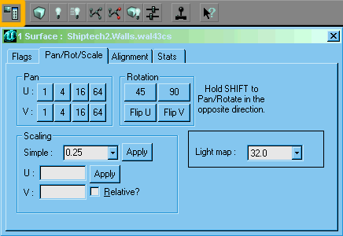

Surface Properties Window
This is a floating window that sets properties, shows stats and allows texture alignment for surfaces.
To open, do one of the following:
- dp Surface Context Menu → Surface Properties...
- hit F5
- click the Surface Properties button on the toolbar
If no surfaces are selected, the window is blank. It updates automatically when the selection is changed: see Selecting surfaces for more on this.
The window title bar displays the number of currently selected surfaces, and if they all have the same texture, its full reference: package, group and name.
The window has four tabs.
(In UnrealEd 2 there's a bug which sometimes make the tabs sticky. If you can't get the correct tab to display, click on the name of the tab that is currently displayed and then on the one you want.)
Flags
![[interface-Ed3-surface-flag]](images/interface-ed3-surface-flag.png) Caption |
These affect the how the texture is displayed on the polygon.
- Invisible
- Two-sided
- Special Lit
- Unlit
- Fake Backdrop
- Mirror
- Portal?
- Antiportal
UnrealEd 2's version of this tab had many more flags: see Surface Flags (UT) for those.
Pan / Rot / Scale

Caption |
This tab allows you to change the way the texture is aligned on the surface.
The Lightmap box sets the resolution of the lightmap on the surface. Default is 32, higher numbers save on map file size. See Map Optimization.
Alignment
This is covered on Surface Alignment.
Stats
Gives info about Light (UT)s and Meshes. Does anyone ever look at this bit?